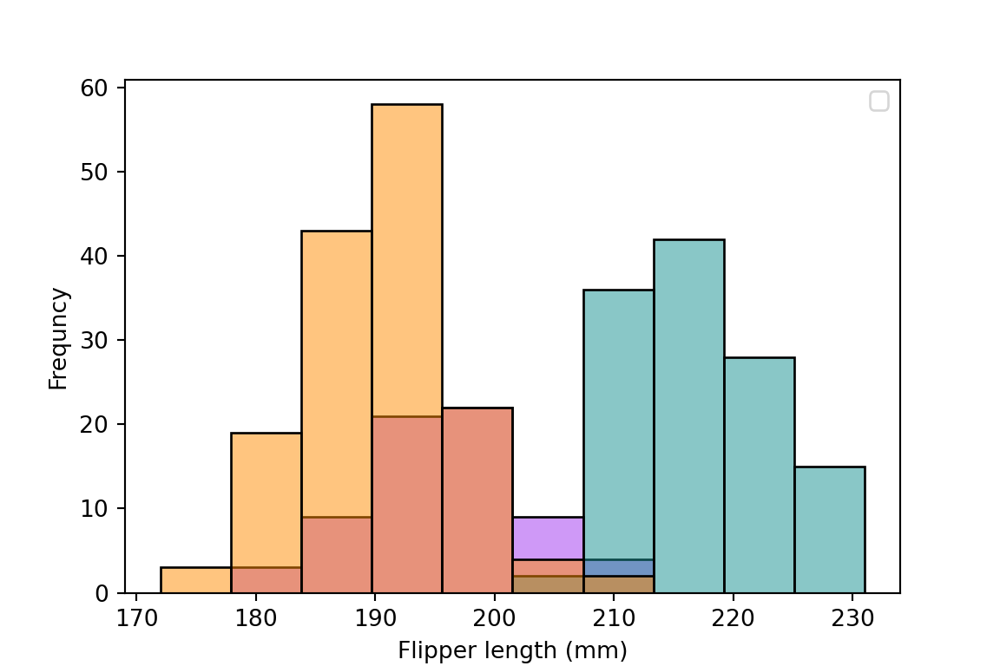
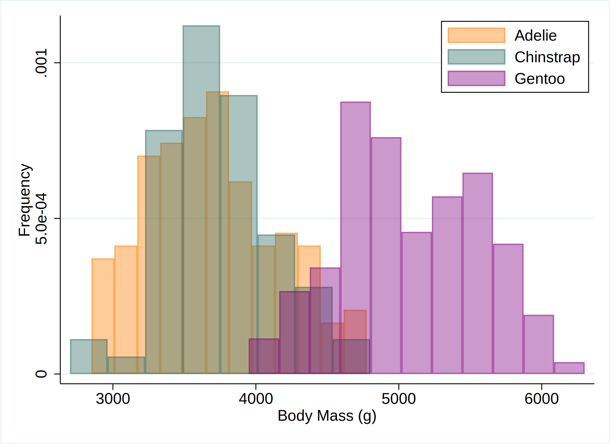

A common misunderstanding about Quarto is that we cannot use multiple languages within a document. Indeed, Jupyter cannot use multiple languages within a document, and we usually use the jupyter engine for Python and Julia (and it is officially supported.)
However, knitr has already been able to execute multiple languages tons of years ago, so why can’t we do it in Quarto?
Let’s see the following example with palmerpenguins::penguins of Horst, Hill, and Gorman (2020)
To run a python code on knitr, install.packages("reticulate")
from palmerpenguins import load_penguinsimport seaborn as snsimport matplotlib.pyplot as pltpenguins = load_penguins()plt.clf()sns.histplot(data=penguins, x='flipper_length_mm', hue='species', palette=['#FF8C00', '#159090', '#A034F0'])plt.xlabel("Flipper length (mm)") plt.ylabel("Frequncy")plt.legend(title ="")plt.show()

Julia
To run a julia code on knitr, run install.packages("JuliaCall"). PalmerPenguins.load() asks you to download the data, so you have to set ENV["DATADEPS_ALWAYS_ACCEPT"] = true to automatically accept it.
usedata/palmerpenguins.dta, cleartwoway (hist body_mass_g if species == 1, color(orange%40)) /// (hist body_mass_g if species == 2, color(emerald%40)) /// (hist body_mass_g if species == 3, color(purple%40)), ///xtitle("Body Mass (g)") ytitle("Frequency") ///legend(order(1 "Adelie" 2 "Chinstrap" 3 "Gentoo") pos(1) ring(0) col(1)) ///plotregion(fcolor(white)) graphregion(fcolor(white))graphexport"figure/stata/hist.svg", replace

But you have to manually export an image file for a plot and add it into a document…
Tabset
I think, one of the most useful case is when you want to support multiple source codes in a textbook or lecture notes. Quato supports Tabset layout and it’s so smart!
Horst, Allison Marie, Alison Presmanes Hill, and Kristen B Gorman. 2020. Palmerpenguins: Palmer Archipelago (Antarctica) Penguin Data. Manual. https://doi.org/10.5281/zenodo.3960218.